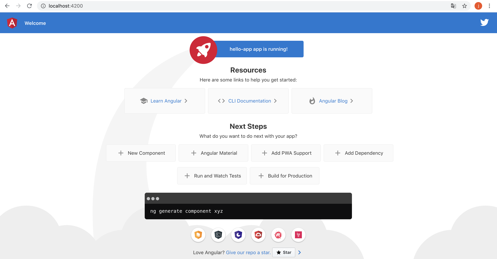

Angular는 Angular CLI를 이용해 프로젝트 관리의 복잡도를 낮추고 Angular 개발에만 집중할 수 있게 합니다.
Angular CLI 소개와 설치
지금 소개하려는 Angular CLI(Angular Command Line Interface)는 개발자가 Angular 개발에 만 집중할 수 있도록 개발에 필요한 Angular 프로젝트의 설정이나 프로젝트의 전반적인 관리를 명령어 기반으로 수행할 수 있게 지원합니다. Angular CLI가 제공하는 기능은 다음과 같습니다.
■ Angular 프로젝트 생성
■ Angular의 중요 구성요소 추가(컴포넌트, 지시자, 파이프, 서비스)
■ 코드 변경 시 빌드를 수행하고 애플리케이션을 재시작
■ 브라우저 동기화
■ 단위 테스트, 종단 테스트와 같은 테스트 환경 제공
■ 프로젝트 배포를 위한 패키징
위 기능은 모두 커맨드 라인 명령어를 통해 지원합니다. 프로젝트가 만들어지거나 Angular의 구성요소 가 추가될 때 Angular 표준 스타일(https://angular.io/styleguide)에 따라 파일과 폴더, 코드 내용 을 자동으로 추가해 줍니다. Angular CLI의 공식 홈페이지는 다음과 같습니다.
■ 공식 홈페이지: https://cli.angular.io/
■ 깃허브 프로젝트: https://github.com/angular/angular-cli
Angular CLI 설치
Angular CLI를 설치하려면 다음과 같은 npm 명령어를 실행합니다.
$ sudo npm install -g @angular/cli@latest
설치 시 –g 옵션을 추가해 전역으로 설치합니다. 설치가 완료되면 ‘ng’ 명령어를 사용할 수 있습니다. ng 명령어는 Angular CLI에 제공하는 기능을 실행하는 역할을 합니다. ng 명령어는 꽤 많습니다. Angular CLI 도움말 옵션을 사용해 확인해 봅니다.
$ ng --help
설치가 완료되면 angular-cli 버전을 확인합니다.
_ _ ____ _ ___
/ \ _ __ __ _ _ _| | __ _ _ __ / ___| | |_ _|
/ △ \ | '_ \ / _` | | | | |/ _` | '__| | | | | | |
/ ___ \| | | | (_| | |_| | | (_| | | | |___| |___ | |
/_/ \_\_| |_|\__, |\__,_|_|\__,_|_| \____|_____|___|
|___/
Angular CLI: 9.0.4
Node: 12.13.1
OS: darwin x64
Angular:
...
Ivy Workspace:
Package Version
------------------------------------------------------
@angular-devkit/architect 0.900.4
@angular-devkit/core 9.0.4
@angular-devkit/schematics 9.0.4
@schematics/angular 9.0.4
@schematics/update 0.900.4
rxjs 6.5.3
Ivy Workspacey라는 메시지가 표시됩니다.
프로젝트 생성
Angular CLI는 ng 명령어를 이용해 angular 프로젝트 생성, angular 코드 관리(컴포넌트, 모듈 등), angular 앱 배포를 지원합니다. Angular CLI를 이용해 프 로젝트를 새로 추가하려면 다음 명령어를 입력합니다.
$ ng new <앱명>
위 명령어를 입력하면 기본 골격에 해당하는 프로젝트가 추가됩니다. 추가될 때 프로젝트에 사용할 의존 모듈도 node_modules 디렉터리에 함께 설치됩니다. 프로젝트 추가가 끝나면 Angular CLI 기반 프 로젝트의 구성이 완료된 것입니다. 이제 프로젝트 폴더로 이동한 후 ng serve 명령어를 실행합니다.
$ cd <앱명>
$ ng serve
프로젝트 생성 준비를 진행하겠습니다.
$ ng new hello-my-app
? Would you like to add Angular routing? Yes
? Which stylesheet format would you like to use? CSS
CREATE dmdate/README.md (1023 bytes)
CREATE dmdate/.editorconfig (246 bytes)
CREATE dmdate/.gitignore (631 bytes)
CREATE dmdate/angular.json (3567 bytes)
CREATE dmdate/package.json (1283 bytes)
CREATE dmdate/tsconfig.json (543 bytes)
CREATE dmdate/tslint.json (1953 bytes)
CREATE dmdate/browserslist (429 bytes)
CREATE dmdate/karma.conf.js (1018 bytes)
CREATE dmdate/tsconfig.app.json (210 bytes)
CREATE dmdate/tsconfig.spec.json (270 bytes)
CREATE dmdate/src/favicon.ico (948 bytes)
CREATE dmdate/src/index.html (292 bytes)
CREATE dmdate/src/main.ts (372 bytes)
CREATE dmdate/src/polyfills.ts (2835 bytes)
CREATE dmdate/src/styles.css (80 bytes)
CREATE dmdate/src/test.ts (753 bytes)
CREATE dmdate/src/assets/.gitkeep (0 bytes)
CREATE dmdate/src/environments/environment.prod.ts (51 bytes)
CREATE dmdate/src/environments/environment.ts (662 bytes)
CREATE dmdate/src/app/app-routing.module.ts (246 bytes)
CREATE dmdate/src/app/app.module.ts (393 bytes)
CREATE dmdate/src/app/app.component.css (0 bytes)
CREATE dmdate/src/app/app.component.html (25755 bytes)
CREATE dmdate/src/app/app.component.spec.ts (1059 bytes)
CREATE dmdate/src/app/app.component.ts (210 bytes)
CREATE dmdate/e2e/protractor.conf.js (808 bytes)
CREATE dmdate/e2e/tsconfig.json (214 bytes)
CREATE dmdate/e2e/src/app.e2e-spec.ts (639 bytes)
CREATE dmdate/e2e/src/app.po.ts (301 bytes)
✔ Packages installed successfully.
Successfully initialized git.
먼저 angular 애플리케이션을 컴파일 하고 서버를 시작하겠습니다.
$ ng serve
ng serve 명령어가 입력되면 프로젝트가 먼저 빌드되고 이 과정이 끝나면 대기 상태에 진입합니다. 이 제 브라우저를 통해 Angular CLI가 만들어준 Angular 프로젝트의 실행 결과를 확인해 보겠습니다. Angular CLI는 서버이고 기본적으로 4200번 포트를 사용하고 있습니다. 브라우저를 열어 로컬호스트 의 4200번 포트로 접속해 봅시다. 접속 주소는 다음과 같습니다.
http://localhost:4200/
컴파일이 완료 되면 브라우저를 열어 다음 주소로 접속합니다. 그럼 다음과 같이 Angular 애플리케이션 실행 화면이 나타납니다.
